Afirmação 3.1.
Existe uma bijeção entre as permutações de \((1, 2, \ldots, n)\) e as maneiras de colocar \(n\) torres não atacantes em um tabuleiro \(T_{n\times n}\text{,}\) sem restrições.
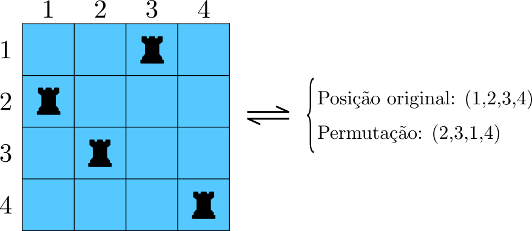
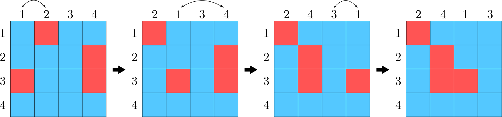
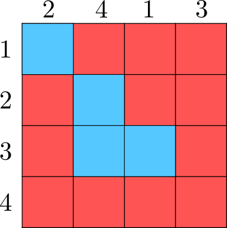
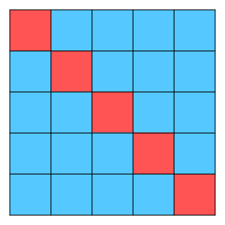
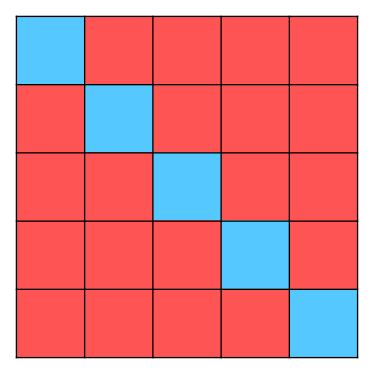
| \(n\) | \(1\) | \(2\) | \(3\) | \(4\) | \(5\) | \(6\) | \(7\) | \(8\) | \(9\) | \(10\) | \(11\) |
|---|---|---|---|---|---|---|---|---|---|---|---|
| \(D_n\) | \(0\) | \(1\) | \(2\) | \(9\) | \(44\) | \(265\) | \(1854\) | \(14833\) | \(133496\) | \(1334961\) | \(14684570\) |
| \(n\backslash k\) | \(1\) | \(2\) | \(3\) | \(4\) | \(5\) | \(6\) | \(7\) | \(8\) | \(9\) |
|---|---|---|---|---|---|---|---|---|---|
| \(1\) | \(1\) | \(0\) | \(0\) | \(0\) | \(0\) | \(0\) | \(0\) | \(0\) | \(0\) |
| \(2\) | \(0\) | \(1\) | \(0\) | \(0\) | \(0\) | \(0\) | \(0\) | \(0\) | \(0\) |
| \(3\) | \(3\) | \(0\) | \(1\) | \(0\) | \(0\) | \(0\) | \(0\) | \(0\) | \(0\) |
| \(4\) | \(8\) | \(6\) | \(0\) | \(1\) | \(0\) | \(0\) | \(0\) | \(0\) | \(0\) |
| \(5\) | \(45\) | \(20\) | \(10\) | \(0\) | \(1\) | \(0\) | \(0\) | \(0\) | \(0\) |
| \(6\) | \(264\) | \(135\) | \(40\) | \(15\) | \(0\) | \(1\) | \(0\) | \(0\) | \(0\) |
| \(7\) | \(1855\) | \(924\) | \(315\) | \(70\) | \(21\) | \(0\) | \(1\) | \(0\) | \(0\) |
| \(8\) | \(14832\) | \(7420\) | \(2464\) | \(630\) | \(112\) | \(28\) | \(0\) | \(1\) | \(0\) |
| \(9\) | \(133497\) | \(66744\) | \(22260\) | \(5544\) | \(1134\) | \(168\) | \(36\) | \(0\) | \(1\) |
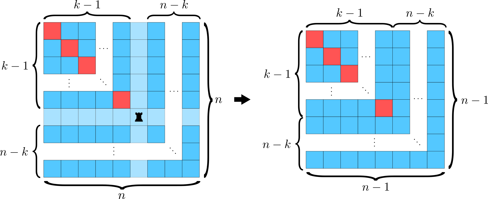
| \(n\backslash k\) | \(1\) | \(2\) | \(3\) | \(4\) | \(5\) | \(6\) | \(7\) | \(8\) | \(9\) |
|---|---|---|---|---|---|---|---|---|---|
| \(1\) | \(1\) | \(0\) | \(0\) | \(0\) | \(0\) | \(0\) | \(0\) | \(0\) | \(0\) |
| \(2\) | \(1\) | \(0\) | \(1\) | \(0\) | \(0\) | \(0\) | \(0\) | \(0\) | \(0\) |
| \(3\) | \(2\) | \(1\) | \(1\) | \(2\) | \(0\) | \(0\) | \(0\) | \(0\) | \(0\) |
| \(4\) | \(6\) | \(4\) | \(3\) | \(2\) | \(9\) | \(0\) | \(0\) | \(0\) | \(0\) |
| \(5\) | \(24\) | \(18\) | \(14\) | \(11\) | \(9\) | \(44\) | \(0\) | \(0\) | \(0\) |
| \(6\) | \(120\) | \(96\) | \(78\) | \(64\) | \(53\) | \(44\) | \(265\) | \(0\) | \(0\) |
| \(7\) | \(720\) | \(600\) | \(504\) | \(426\) | \(362\) | \(309\) | \(265\) | \(1854\) | \(0\) |
| \(8\) | \(5040\) | \(4320\) | \(3720\) | \(3216\) | \(2790\) | \(2428\) | \(2119\) | \(1854\) | \(14833\) |
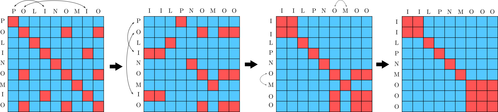
permutacao_caotica_r, definida no bloco de códigos a seguir, calcula o número de permutações caóticas com repetições de um texto. Para usar a função é necessário informar o texto em formato de string, ou seja, entre aspas, conforme a linha 23 do código:[cross-reference to target(s) "ric01" missing or not unique]), o número de permutações válidas para os elementos distintos é:[cross-reference to target(s) "exem-perguntainternet" missing or not unique]. Foram usados os métodos abs e integral que calculam o valor absoluto e a integral, respectivamente.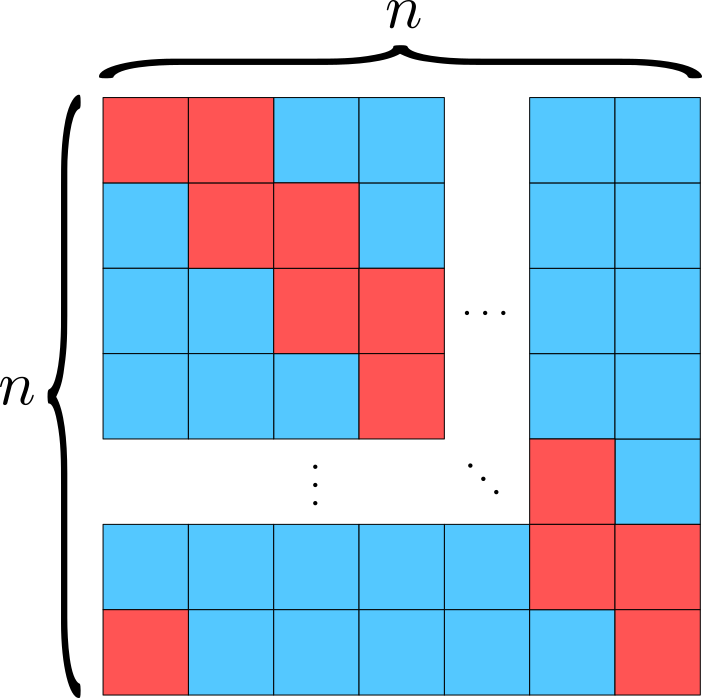
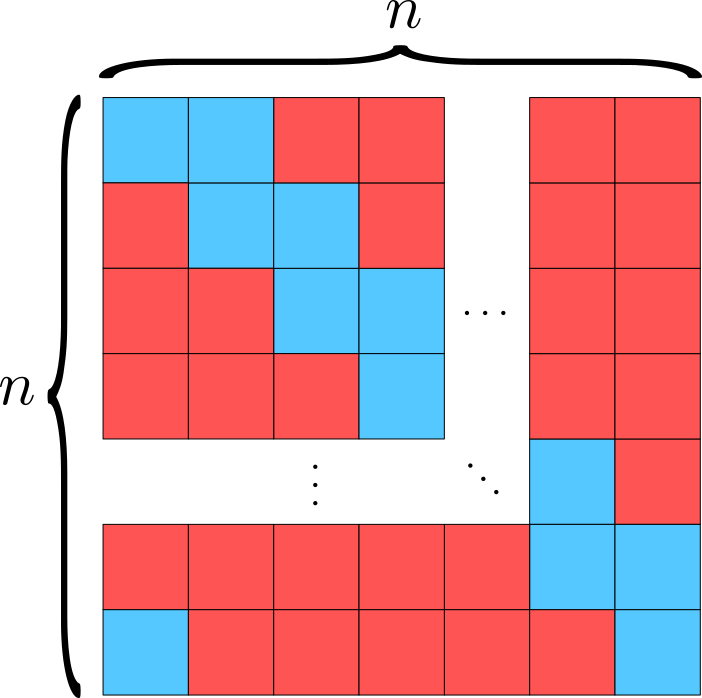
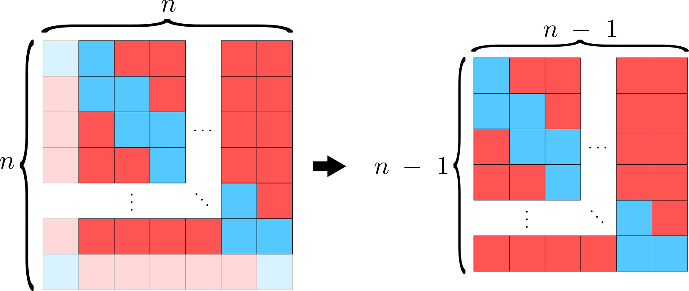
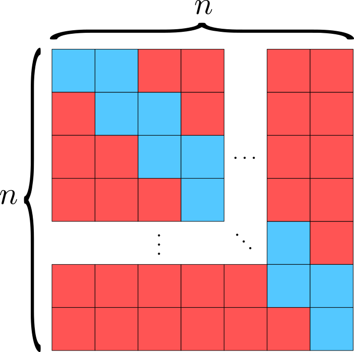
| \(n \backslash i\) | \(1\) | \(2\) | \(3\) | \(4\) | \(5\) | \(6\) | \(7\) | \(8\) | \(9\) |
|---|---|---|---|---|---|---|---|---|---|
| \(1\) | \(0\) | \(0\) | \(0\) | \(0\) | \(0\) | \(0\) | \(0\) | \(0\) | \(0\) |
| \(2\) | \(1\) | \(0\) | \(0\) | \(0\) | \(0\) | \(0\) | \(0\) | \(0\) | \(0\) |
| \(3\) | \(2\) | \(1\) | \(0\) | \(0\) | \(0\) | \(0\) | \(0\) | \(0\) | \(0\) |
| \(4\) | \(9\) | \(2\) | \(1\) | \(0\) | \(0\) | \(0\) | \(0\) | \(0\) | \(0\) |
| \(5\) | \(44\) | \(13\) | \(2\) | \(1\) | \(0\) | \(0\) | \(0\) | \(0\) | \(0\) |
| \(6\) | \(265\) | \(80\) | \(20\) | \(2\) | \(1\) | \(0\) | \(0\) | \(0\) | \(0\) |
| \(7\) | \(1854\) | \(579\) | \(144\) | \(31\) | \(2\) | \(1\) | \(0\) | \(0\) | \(0\) |
| \(8\) | \(14833\) | \(4738\) | \(1265\) | \(264\) | \(49\) | \(2\) | \(1\) | \(0\) | \(0\) |
| \(9\) | \(133496\) | \(43387\) | \(12072\) | \(2783\) | \(484\) | \(78\) | \(2\) | \(1\) | \(0\) |
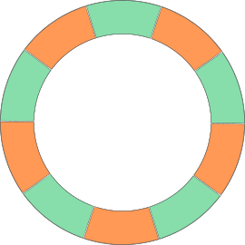
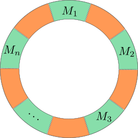
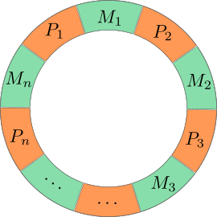
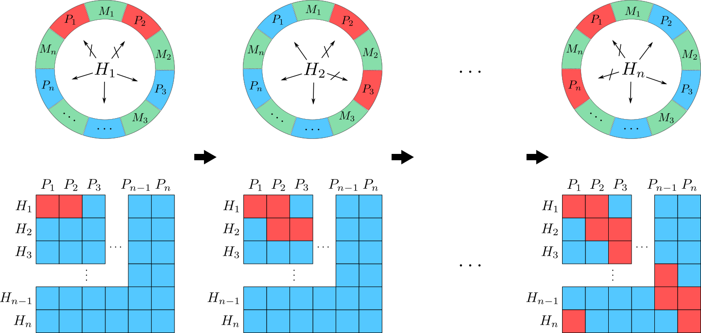
i_discordante definida anteriormente, podemos definir uma nova função menages da seguinte maneira:| \(n\) | \(2\) | \(3\) | \(4\) | \(5\) | \(6\) | \(7\) | \(8\) | \(9\) |
|---|---|---|---|---|---|---|---|---|
| \(M_n\) | \(0\) | \(12\) | \(96\) | \(3120\) | \(115200\) | \(5836320\) | \(382072320\) | \(31488549120\) |